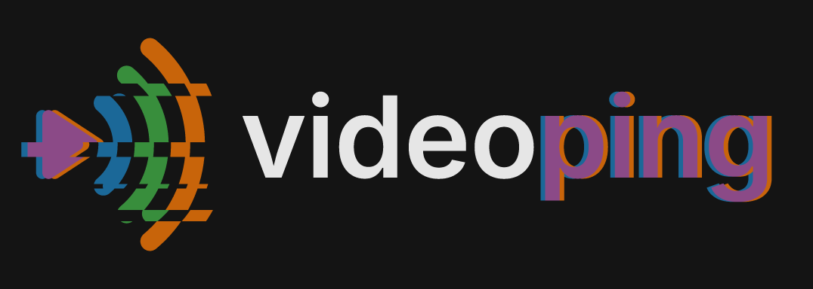
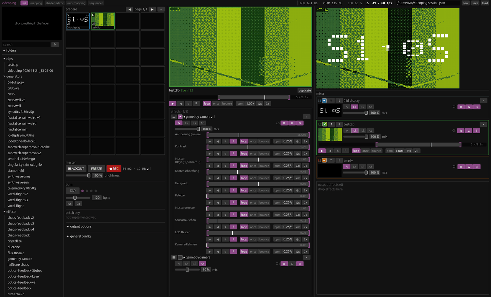
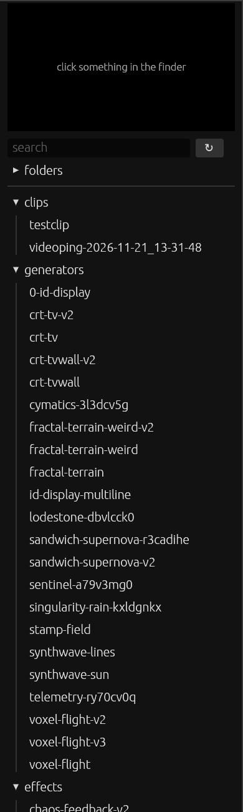
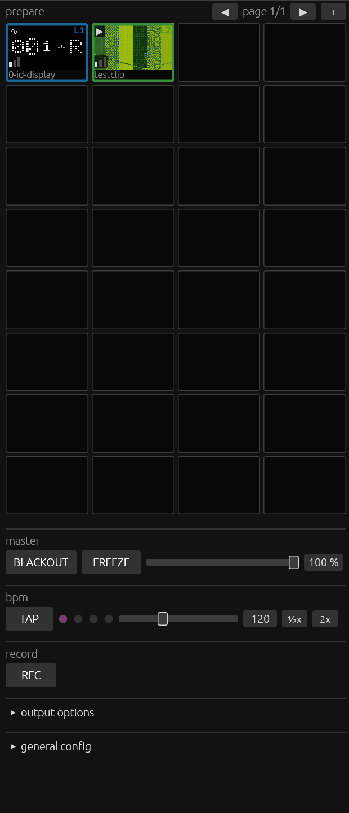
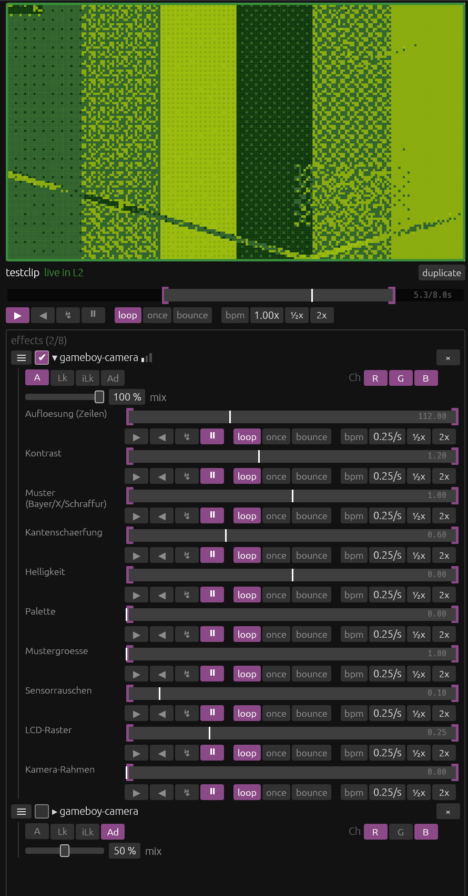
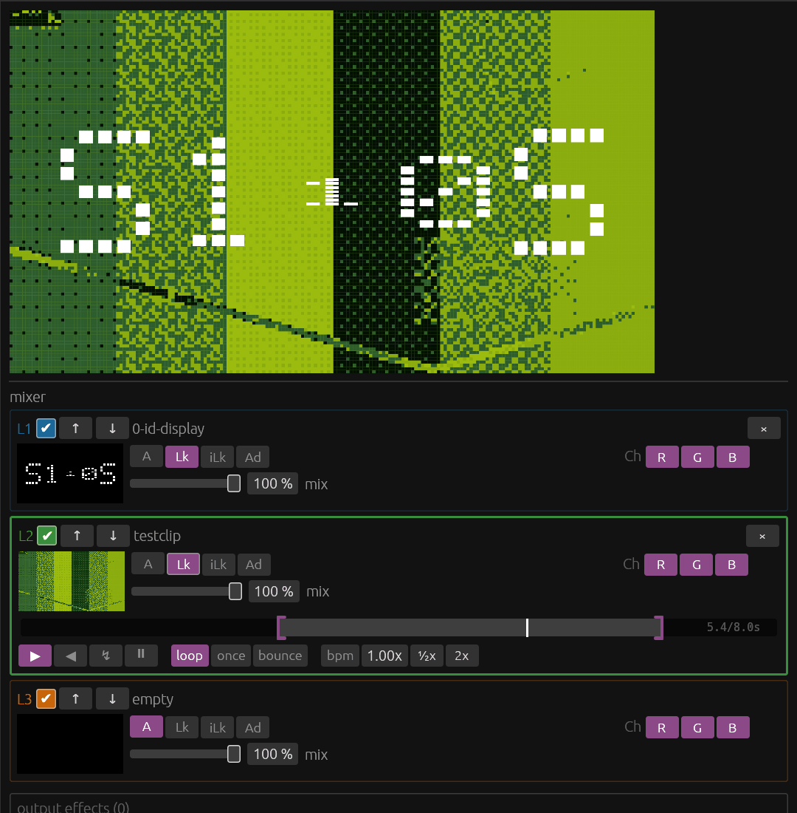
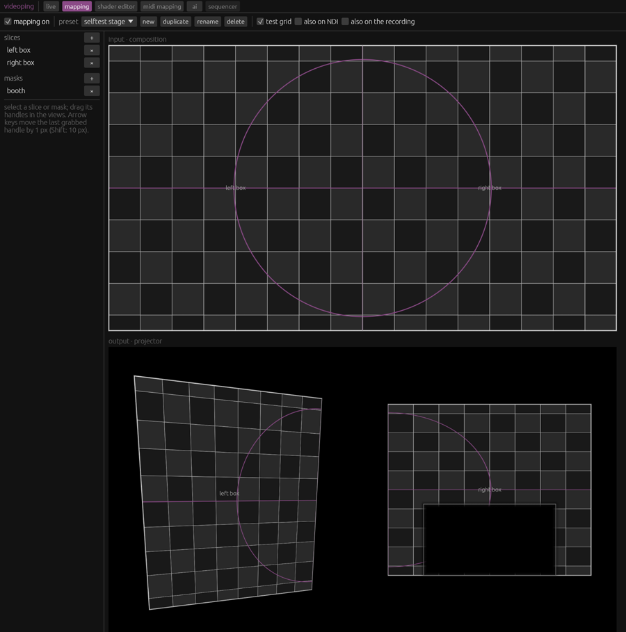
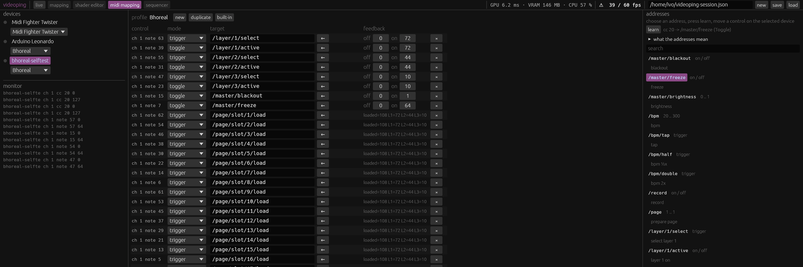
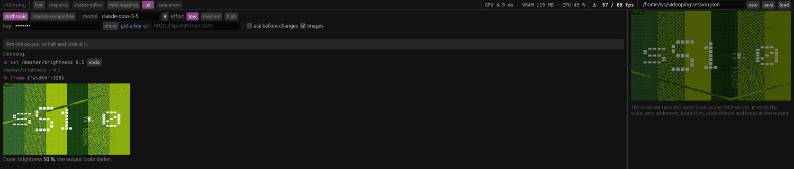
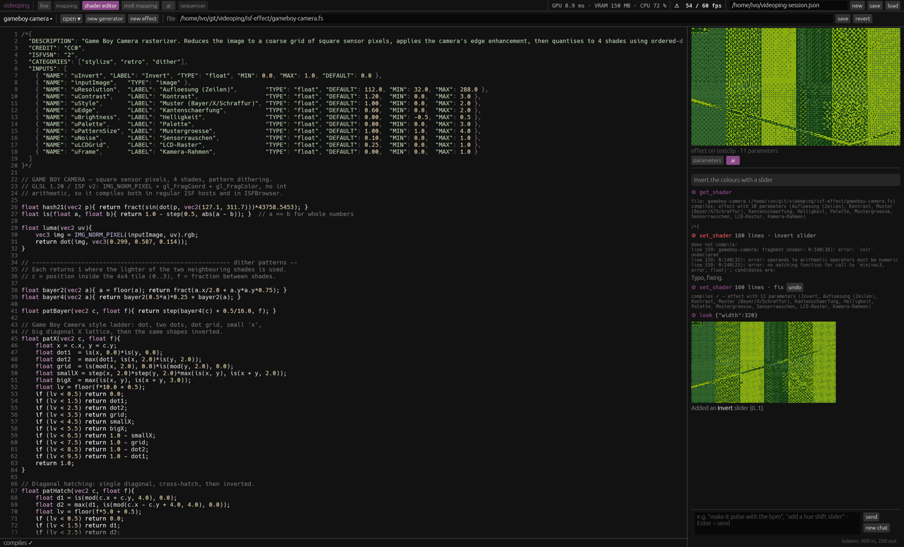

manualvideoping is a live VJ tool for Linux: clips, ISF generators and NDI sources are prepared in a grid, get effects, and are mixed live on 3 layers into one output, which goes to a screen, to NDI and to a recording. This manual explains how to play with it. Installation is in install.md.

1Concept
Sources. Three kinds of material can be played:
| badge | source | what it is |
|---|---|---|
| ▶ | clip | a video file (mp4, mov, mkv, webm, …) with a timeline |
| ∿ | generator | an ISF shader that makes images by itself |
| NDI | NDI source | a live video stream from the network (another computer, a camera, another program) |
Instances. Everything you put into the prepare grid becomes an instance: a source plus its own settings (in / out points, speed, effects, parameters). The same file can be in the grid several times with different settings; duplicate makes such a copy, and a duplicated generator looks different, because every instance has its own random seed.
Prepare and live. The prepare grid is your crate of material. To play an instance, load it into one of the 3 mixer layers. It is then live — and it is still the same instance as in the grid, not a copy: whatever you change in the prepare detail (effects, speed, limiters) changes the output immediately. A live slot has a border in the color of its layer.
Colors mean layers. blue = layer 1, green = layer 2, orange = layer 3. These three colors are used for nothing else, so you can always see what plays where (on screen and later on the Bhoreal). Everything else is grey, plus one plum accent color for "on" (selected buttons, effect switches, range sliders).
Effects are ISF effect shaders. They sit either on an instance (they travel with it into any layer) or on the whole output (output effects, after the mixer). An effect can be moved between the two with all its settings.
Signal flow
instance: source → effect 1 → effect 2 → … (up to 4 effects) mixer: layer 3 (bottom) → layer 2 → layer 1 (top), each with mix-type, mix %, R G B output: mixer → output effects → freeze → brightness / blackout → screen, NDI, REC
2The screen
Four areas from left to right; all column borders can be dragged.
Top bar
- Tabs: live (everything in this chapter), midi mapping (MIDI controllers) and ai (the ai tab), shader editor (Shader editor) and projection mapping (projection mapping). The output keeps playing in every tab.
- A status message appears for a few seconds (saved, loaded, recording to …).
- GPU · VRAM · CPU: what videoping uses right now (see Performance).
- fps counter
measured / target fps: grey = fine; white with ⚠ = the output does not reach its frame rate. - The session file path and new save load (see Files and settings).
Column 1: finder
- finder preview on top: click a file to see it there before using it. × at its top right stops it (or click the file again).
- search filters the list; ↻ rescans the folders (normally not needed: new files appear by themselves within 2 s).
- folders: the folders the finder shows; add one with its path, remove one with ×.
- Five categories: clips, generators, effects, NDI sources (found automatically on the network) and videopong (below). Their headers always stay visible, with the number of files; one is open at a time and scrolls on its own. Click another header to switch: each keeps its scroll position, so from deep in the clips the effects are one click away. Click the open header to close it. Whether a shader is a generator or an effect is read from the shader itself, not from the folder it is in.
- Inside a category the files are grouped by folder (with the number of files): click a folder to open or close it.
- search all searches every category at once: the headers show the hits, and a category with hits opens by itself. Esc clears the search.
- videopong (the fifth category): clips from videopong.net,
the VJ footage platform. Type a search and press Enter (or search), or
random for 50 random clips; more loads the next 50. Each
clip shows its thumbnail, title, length, author and license. Click = download and preview,
double click = download into the first free slot, drag onto a slot = download into that
slot (the row shows the progress). Downloaded clips get a ✓, are stored in
~/Videos/videopong/and then work like any clip, also offline. Only the public preview quality (480×360) is downloaded; please respect each clip's license. - Favorites: hover over a file and click the ☆ on its left: it is pinned under ★ favorites on top of its category. Click ★ again to remove it. Favorites are saved with the session and stay with "new".
- Click = preview, double-click = add to the first free prepare slot (an effect: add it to the selected instance), drag = drop onto a slot (a new instance, or replaces one that is not live) or, for effects, onto a slot or an effect stack.
- A shader with documentation shows its description when you hover over it; a grey ⚠ after the name means the documentation has a warning (e.g. flashing).

Column 2: prepare grid, master, bpm, record, settings
- prepare grid: 4 × 8 slots (the size of the Bhoreal's columns 2–5). More than 32
instances: + adds a page, ◀
▶ switch pages.
- badge top left: ▶ clip, ∿ generator, NDI; top right the layer it is live in (L1–L3)
- border: layer color = live, white = selected, grey = idle
- small grey bars bottom left: resource meter (see Performance)
- × bottom right (on hover) deletes the instance — not while it is live
- master: BLACKOUT FREEZE and the brightness slider.
- bpm: TAP, the beat dots, the bpm slider, ½x 2x.
- record: REC.
- output options (fold open): resolution, frame rate, screen, output window, NDI, GPU.
- general config (fold open): resource meters, recording folder, MCP server.

Column 3: prepare detail
The selected instance:
- its preview on top (stays visible when you scroll)
- its name, and where it is live ("live in L2") — or, when it is not live, at which rate its preview runs ("prepare 30 fps", see Performance)
- duplicate
- the clip controls (clips only, see Clips and parameters)
- the effect stack (see Effects)

Column 4: mixer and output

- main output preview on top (stays visible). The two previews always have the same size.
- mixer: 3 layers, layer 1 on top. Each layer: on / off checkbox, ↑ ↓ to change the order, × to unload, mix-type, R G B, mix %, and for clips a compact timeline with the transport. The selected layer is marked; click a layer to select it.
- output effects below: effects on the whole mix.
3Playing a set
Collect material. Add your folders under folders in the finder. Drag clips, generators and NDI sources into the prepare grid, or double-click them. Arrange slots by dragging them.
Prepare. Click a slot: its detail opens in column 3. Set in / out points, speed, add effects — all before anything is live. The preview shows the result.
Go live.
- Select a mixer layer (click it), then double-click a slot: it plays in that layer.
- Or drag a slot onto a layer.
- Click a live layer: its instance is selected in the grid (the page switches if needed), so you can tweak it right away. Clicking an empty layer selects it and empties the prepare detail.
Mix. Per layer (and per effect, it works the same):
| button | mix-type |
|---|---|
| A | alpha: plain crossfade with the mix slider |
| Lk | luma key: dark parts of the layer become transparent |
| iLk | inverted luma key: bright parts become transparent |
| Ad | add: the layer is added on top (brightens) |
- mix %: 100 % = fully on, 0 % = off.
- In A and Ad it fades the layer as a whole.
- In Lk and iLk it moves the key instead (luma fade): at 100 % only black (iLk: white) is keyed out; going down, more and more of the dark (iLk: bright) parts disappear, the brightest (iLk: darkest) parts last, until nothing is left at 0 %. Pull it down slowly for a luma fade-out, up for a fade-in.
- Ch R G B: which color channels of the layer are mixed in. Switch one off and that channel comes only from the layers below — a quick way to color effects.
- The checkbox switches a whole layer off and on, ↑ ↓ change the order, × unloads it.
Master acts on the very end of the chain, for screen, NDI and recording alike:
- BLACKOUT: output black at once. During a blackout the brightness slider shows 0 %: pull it up to fade in from black (that ends the blackout). Pressing BLACKOUT again jumps back to the previous brightness.
- FREEZE: holds the current output frame while you change things underneath.
- brightness: overall level of the output.
- Panic = BLACKOUT, or FREEZE when the picture should stay.
Tempo. Tap TAP on the beat a few times; the dots show the beat. The slider sets the bpm by hand (whole bpm only), ½x 2x halve and double it. The bpm drives clips and parameters in bpm mode and all jumpcuts.
4Clips and parameters
Clip transport
Clips (not generators or NDI sources) have a timeline:
- Drag the [ and ] handles to set the in and out point (the part that plays). Click or drag elsewhere on the bar to jump.
- Play mode: ▶ forward, ◀ backward, ↯ jumpcut (jumps to a random position between the handles every N beats), ⏸ pause.
- loop once bounce: once stops at the end; switching to loop then starts it again, switching to bounce plays it back.
- Speed, two modes:
- free: a speed factor (1.00x = normal; drag the number)
- bpm: how many beats the part between the handles lasts (e.g. 8 beats at 120 bpm = 4 s, whatever the length of the clip). In bpm mode the same number also sets the jumpcut interval.
- ½x 2x: half / double speed at once.
The layer in the mixer shows the same transport in compact form — it is the same instance, so both change the same settings.
Parameters
Every effect and generator parameter has the same kind of control:
- range slider: the white line is the value. In pause mode, click or drag on the bar to set it. The [ ] handles set a range for the animation.
- The row below animates the value inside that range, with the same buttons as a clip: forward, backward, jumpcut, pause; loop / once / bounce; free speed (per second) or bpm (beats per cycle); ½x / 2x.
- On / off parameters are checkboxes, colors a color button, lists a dropdown.
- Right click on a parameter (its name or its control) resets it to the shader's default: value, full range, animation off.
- Long names wrap; hover over a name to see it in full, and, when the shader has documentation, what the parameter does (range, default).
5Effects
- Add: drag an effect from the finder onto a slot, onto the effect stack of the selected instance, or onto the output effects. Double-click adds it to the selected instance.
- Up to 4 effects per instance and 4 output effects (that is what the Bhoreal has pads for).
- Each effect row: ≡ drag handle, on / off checkbox, ▸ / ▾ to show / hide the parameters, the name, ×. Mix-type, R G B and mix % always stay visible, also when folded.
- Order: drag the ≡ handle up or down. The first effect is applied first.
- Move an effect between an instance and the output effects: drag its ≡ handle onto the other stack. It keeps all its settings.
- A shader that does not compile shows a red ⚠ next to its name; hover for the error.
- ? next to the name: the shader has documentation.
- ✎ next to the name (and next to "generator" for a generator): open the shader in the shader editor. In the finder: right click on a shader → edit.
Shader documentation
A shader can come with a Markdown file of the same name next to it:
chaos-feedback.fs + chaos-feedback.md. videoping reads it (it never changes it)
and shows it in four places:
- Finder: hover over the shader for its first paragraph.
- Parameters: hover over a parameter name for its line of the slider table.
- ? on the effect (or next to "generator" in the prepare detail): the whole document in its own window. It stays open while you play; move and resize it, close with × or by clicking ? again. Long tables are shown as lists so the text wraps.
- A grey ⚠ in the finder and next to ? when the document has a warning line; hover to read it.
Write the file like this, so videoping finds the parts (the rest is free):
# Title
First paragraph: what the shader does (shown in the finder).
> ⚠️ **Flashing:** a warning line starts with > and contains ⚠.
| Slider | Range | Default | What it does |
|---|---|---|---|
| **Feedback-Mix** | 0 – 1 | 0.85 | How much of the previous frame is added back. |The bold name in the first column must be the parameter's LABEL from the shader
header (or its NAME). The last column is the description. Edits to the .md show up
within a second.
6Output: screen, NDI, recording, mapping
Settings are in output options (column 2).
- resolution and frame rate (25 / 30 / 50 / 60) of the output. Screen, NDI and recording all use them.
- output window: opens the output in its own window. Double-click it or press F for fullscreen on the chosen screen, Esc to leave fullscreen. "connected" lists the screens the system sees.
- NDI output: sends the output to the network under the ndi name. Needs the NDI runtime (see install.md); if videoping cannot find it, set the NDI library folder.
- NDI input: NDI sources on the network show up in the finder; use them like clips.
- GPU: shows the graphics card in use; on hybrid laptops "render on NVIDIA GPU" restarts videoping on the NVIDIA card.
Recording
- REC (record box in column 2, below bpm) records the output — after
master, exactly what NDI sends — as an H.264 mp4 in the recording folder (general config,
default
~/Videos/videoping; hover REC to see it), named with date and time. - While recording: ● REC, running time, file size and a resource meter.
- The file plays again in videoping with all transport modes (also backward and jumpcut). Add the recording folder to the finder ("add to finder" in the general config) and drag a recording onto a slot.
- Recording continues through new and load; it stops when you change the output resolution, and is finished properly when you quit. If videoping crashes, the file still plays up to about 2 s before the crash.
- It needs a hardware video encoder (NVIDIA, or Intel / AMD via VA-API). Without one REC is greyed out; hover it to see why.
- About 300 MB per minute at 1080p60.
Projection mapping (tab "projection mapping")
Shape the screen output for the surfaces you project onto: boxes, stage objects, a screen hit at an angle. The mapping is applied at the very end (after master) to the screen output; the previews in the live tab stay unmapped.

- Slices: each takes a rectangle of the composition (input view, top) and puts it on the output with its own four corners (output view, bottom) — the corners can be dragged anywhere, the picture is bent with correct perspective. Drag a corner, or drag inside to move the whole slice.
- Masks: polygons on the output that black out what is behind them (a DJ booth, a door). Drag the points, drag inside to move it; double click on an edge adds a point, right click on a point removes it. soft edge fades the border; invert keeps only the inside.
- Select a slice or mask in the list on the left (rename it there) to see its numbers in pixels and type exact values; output = input puts the corners back without distortion.
- Handles: corners and points catch the mouse from about 16 pixels away (also just outside the view, for corners on its border); the pointer shows a cross over a handle and a move cross over a slice or mask. A grabbed handle follows the mouse without jumping to it. The last grabbed handle gets a white ring with its position in pixels: the arrow keys fine-tune it by 1 pixel (Shift: 10 pixels).
- test grid: the slices show a grid instead of the composition, on the projector too — for lining everything up on the real surfaces.
- mapping on switches it for the screen. The output window shows every change at once, so you can adjust while looking at the projection.
- also on NDI / also on the recording: by default NDI and REC get the clean composition; tick these to send / record the mapped picture instead.
- Presets: a mapping belongs to a venue, not to a set. Presets are saved by themselves in
~/.config/videoping/mapping/(new, duplicate, rename, delete in the bar); the session only remembers which one is active and whether it is on.
7MIDI controllers
videoping is made to be played with controllers. Every MIDI controller works the same way: a profile binds its buttons, knobs and faders to things in videoping, and sends their state back to its LEDs. Two controllers come with a built-in profile and work as soon as they are plugged in: the Bhoreal (8×8 pads) and the Midi Fighter Twister (4×4 encoders). Any other controller is mapped in the tab midi mapping.
- Plug controllers in before or while videoping runs: they are found within 2 seconds.
- The LEDs always show the real state, also after changes with the mouse or via MCP.
- Every attached controller is cleared completely: on start (and when it is plugged in) all its LEDs and rings are switched off first, then the real state is shown; on quit everything is switched off again, also on controllers without a profile.
- A pad or knob acts at the next video frame: as fast as a mouse click.
Bhoreal
Hold it with the USB cable at the top right. Column 1 is then on the left.
If the pads are turned (the Bhoreal sometimes presents itself turned around): in the tab midi mapping, choose the Bhoreal, press calibrate next to "orientation" and then press the pad next to the USB cable (top right). Done; it is remembered.
L1
1
9
17
25
fx 1
fx 1
fx 1
L2
2
10
18
26
fx 2
fx 2
fx 2
L3
3
11
19
27
fx 3
fx 3
fx 3
on
4
12
20
28
fx 4
fx 4
fx 4
on
5
13
21
29
fx 1
on
6
14
22
30
fx 2
out
7
15
23
31
fx 3
8
16
24
32
fx 4
- Column 1: select layer 1 / 2 / 3 · layer 1 / 2 / 3 on / off · blackout · record (REC).
- Columns 2–5: the 32 slots of the prepare page that is shown, top-down per column like the grid. Press = load into the selected layer. Turn the page in the ui and the pads follow.
- Columns 6–8, top 4 rows: effects 1–4 of what plays in layer 1 / 2 / 3: press = on / off. They follow the layer: load another clip and the pads control its effects.
- Column 6, bottom 4 rows: output effects 1–4 on / off.
- Columns 7–8, bottom 4 rows: free (map them in the tab if you like).
LED colors (the Bhoreal shows only full colors, no dimming):
| color | means |
|---|---|
| layer color | live in that layer · layer selected · layer on · effect on |
| plum | there, but not on: a loaded slot that is not live, an effect that is off |
| yellow | output effect on |
| red | blackout on · recording |
| off | nothing there (empty slot, no effect), or switched off |
Midi Fighter Twister
1
2
3
mix
4
5
6
mix
7
8
9
mix
10
11
12
ness
- Column 4, top-down: mix of layer 1, layer 2, layer 3, and the master brightness.
- The LED ring shows the value, also after changes with the mouse: turning never jumps.
- Brightness during a blackout: the ring shows 0; turning it up ends the blackout and fades in.
- Columns 1–3: parameters 1–12 of the focused effect of the selected instance, row by row (top left = parameter 1, the next row starts with 4). The focus is the effect you opened last (▸ → ▾); a ◎ next to its name shows it. Nothing opened: a generator's own parameters, else effect 1. Open another effect and the encoders control it at once; the rings jump to its values.
- Push an encoder of columns 1–3: that parameter back to its default (like a right click).
- Parameters are counted like the parameter list (top-down); an encoder without a parameter shows an empty ring.
- On start and on quit all rings are set to 0 (all 4 banks), also those of encoders without a binding.
The tab "midi mapping"
Here every controller is mapped, also the two built-in ones (their profiles can be changed like any other; built-in brings the original back).

- Devices (left): every connected controller, also plugged in while videoping runs (found within 2 s). The dot lights up when it sends something. Choose its profile in the dropdown. Below: the monitor with the last messages.
- Bindings (middle): what each control does: the control, the mode (trigger = fire once, toggle = on / off, momentary = on while held, absolute = fader / knob over the whole range, relative = endless encoder), the target and the LED feedback. The row of the control you just moved lights up. × removes a binding.
- Learn (right): choose what to control in the list (search helps, e.g. "blackout" or "layer/2"), press learn, move a control on the controller: done. The mode is guessed (a button on an on / off, a fader or encoder on a range); change it in the table if needed.
- Profiles are saved automatically in
~/.config/videoping/midi/(one file per profile). They are part of your setup, not of a session. Above the table:- the name: type a new one and press Enter to rename (the built-in Bhoreal keeps its name)
- new: an empty profile for the selected device
- duplicate: a copy, e.g. a second Bhoreal layout; switch between them in the device's dropdown on the left (the device then uses that profile from now on)
- delete: asks once more; built-in (Bhoreal only): back to the original, your changes are gone
What the addresses mean. Each target is written as a short path. In the tab every address also shows its meaning in words (e.g. "slot 9 (testclip) · gameboy-camera · Kontrast").
| address | means |
|---|---|
/layer/2/mix | mixer layer 2 (also: select, active, mixtype, r, g, b, unload) |
/layer/2/fx/3/active | effect 3 of whatever plays in layer 2 right now |
/layer/2/param/4 | parameter 4 of the generator playing in layer 2 |
/slot/9/load | slot 9 of the grid (top-down per column; page 2 starts at 33): load, select, state |
/slot/9/fx/1/param/2 | parameter 2 of effect 1 of whatever is in slot 9 |
/page/slot/9/… | slot 9 of the page shown: a controller follows the page |
…/param/4 | the 4th parameter, counted top-down like the parameter list (not by name: names change while shaders are made) |
/out/fx/1/… | output effect 1 |
/sel/param/3 | parameter 3 of the focused effect of the selected instance (the effect opened last; the Twister uses this); /sel/param/3/reset = back to its default |
/master/blackout /bpm /record /page | master, tempo, recording, the prepare page |
A binding to a slot controls whatever is in that slot; a binding to a layer whatever plays in that layer. A target that does not exist right now (e.g. effect 5 when only 2 are there) shows "not there now" in the table and simply does nothing.
Mapping a new controller, step by step
- Plug it in and open midi mapping: it appears on the left, with "no profile". Move a control: the dot lights up and the monitor shows its messages.
- Choose what to control on the right, e.g. search "layer/1/mix".
- Press learn and move the knob or press the button. The first learned control creates a profile named after the controller.
- Repeat for every control. Check the mode in the table: a knob should be "absolute", an endless encoder "relative", a button "toggle" or "trigger".
- Done: the profile is saved by itself and is used every time this controller is plugged in.
8AI control: ai tab and MCP
videoping can be read and controlled by an AI assistant such as Claude Code, through MCP (Model Context Protocol). The assistant sees what is live, changes things the same way a MIDI controller does, loads clips and effects, and can look at the output as an image. This is most useful for writing shaders (the assistant edits an ISF file, videoping reloads it, the assistant looks at the result and keeps going), for preparing a set ("put all clips from folder X into page 2, each with VHS glitch") and for asking ("what is live, why is it slow?").
Two ways: the ai tab inside videoping (chat, nothing else to install), or an assistant outside, like Claude Code, connected through the MCP server.
The ai tab
A chat inside videoping. Type what you want; the assistant uses the tools below directly, and every tool call is listed in the chat with its result. The output preview is on the right.

- Provider: Anthropic (Claude) or OpenAI-compatible:
OpenAI, or a model on your own computer with Ollama (url
http://localhost:11434/v1) or LM Studio (http://localhost:1234/v1). Local models are free but often weak at using tools. - model: for Anthropic pick one with ▾
(
claude-opus-5-5is the default,claude-haiku-5-5the fastest and cheapest). effort: how much the model thinks before it answers; low is the fastest, high for harder jobs. - key: your API key. get a key opens the Anthropic console (API keys →
create key); copy it and paste it into the field (Ctrl+V). It is stored in the general config
file, readable only by you. Empty field = the environment variable
ANTHROPIC_API_KEY(OPENAI_API_KEY), if set. url: empty = the provider's own server. - Enter sends, Shift+Enter makes a new line. stop breaks off, new chat forgets the conversation. The chat is not saved.
- undo next to a
setputs the value back (the assistant is told). - ask before changes (for shows): every change (set, load, add effect) waits in the chat for apply, skip or apply all. Looking (state, frame …) never waits.
- images: the assistant may look at the output (
frame); switch off for models that cannot take images. - The chat goes on when you switch to another tab. Every message costs API usage; the token count of the chat is at the bottom right.
- The ai tab is not limited by the MCP read only setting (that is for assistants from outside); use ask before changes instead.
Connect an assistant from outside (Claude Code)
- Start videoping. The MCP server runs by itself (general config → MCP server, port 7466).
- Once, in a terminal:
claude mcp add --transport http videoping http://127.0.0.1:7466/mcp
(the same command is shown in the general config, for copying). - Ask Claude Code, e.g. "what is live in videoping?", "put rutt-etra on the output", "show me the output", "set layer 2 to luma key at 60 %".
What the assistant can do
| tool | what it does |
|---|---|
state | overview: what plays in which layer, master, bpm, recording, the slots and their effects, output effects, frame rate and GPU load |
list_addresses · get · set | everything a controller can do, with the same addresses (/layer/2/mix, /slot/9/fx/1/param/3 …) |
list_files · load_file · add_effect | the files of the finder; put a clip or generator into a slot; add an effect to a slot or the output (max 4) |
frame | the output, the preview, a slot or the shader editor's preview as an image |
shader_errors · shader_info | which shaders do not compile and why; the parameters of a shader in videoping's numbering, and its documentation |
Safety
- Only programs on this computer can connect (127.0.0.1); requests from web pages are refused.
- Every change shows in the status line of the top bar, e.g. "mcp: /layer/1/mix = 0.5" (from the ai tab: "ai: …"); in the ai tab also in the chat, with undo.
- read only (for shows) in the general config: the assistant can still look, but every change is refused. Switch MCP server off to close it completely.
9Shader editor
Write and change ISF shaders inside videoping, with a live preview — by hand, or by telling the AI what you want.

Open, new, save
- open ▾ lists the generators and effects of the finder (with search). Also ✎ next to an effect in the prepare detail, or a right click on a shader in the finder.
- new generator / new effect start from a small working example. The file name field is filled with a free name next to your other shaders of that kind.
- Ctrl+S or save writes the file shown in the file field. Type another name there to save a copy; an existing other file is never overwritten. revert goes back to the saved file. A • after the name = unsaved changes; opening another shader then asks first (save / discard / cancel).
- Until you save, nothing changes on disk: the clips that use the shader keep the saved version. After saving they switch to the new one at once.
Editing and the preview
- The preview follows your typing (a quarter second after the last key). A generator is shown alone, an effect on the selected instance of the live tab (or on what plays in a layer).
- Under the preview: the shader's parameters as sliders, to try them out while you edit.
- The line at the bottom says compiles ✓ or lists the errors with the line in your file (the line numbers on the left turn red). Click an error to jump to its line.
- The preview renders only while this tab is open, so it costs nothing while you play.
With the AI
- Switch the panel under the preview from parameters to ai and describe what you want: "a slow plasma in purple", "make it pulse with the bpm", "add a hue shift slider", "why is it so slow?".
- The AI reads the shader, writes the whole file into the editor, sees the compile errors and fixes them, and looks at the preview. Every step is listed; undo next to a change puts the text back as it was.
- It only changes the text in the editor, never the file: you decide with save. It can read the other shaders of the finder (and their documentation) to learn from them.
- It uses the provider, model and key of the ai tab; its conversation is separate from the ai tab's.
10Performance
videoping tells you when it gets too heavy, before the audience sees it.
fps counter (top bar): measured / target fps. Grey = fine. White with ⚠ = the
output is below its frame rate or dropped a frame in the last 2 seconds; hover for the number of
dropped frames.
Resource meters: three small grey bars — 1 = light, 2 = medium, 3 = heavy.
- on a prepare slot (bottom left): the whole instance, source plus its effects
- next to an effect name: that effect alone
- next to REC: the recording
- only shown while something is actually rendered (live, selected or previewed)
- hover for the numbers: GPU time and its share of one frame, video memory, and for clips the decoder (hardware / software) and whether it keeps up
- the top bar shows the totals: GPU time per frame, video memory, CPU; hover for RAM
- "heavy" means: this item alone takes 40 % or more of a frame at your frame rate, uses a lot of video memory, or (clips) the decoder does not keep up
- switch the meters off in the general config if you do not want to see them
The main mix has priority. The live layers and the output are always rendered first. Things that are only in prepare — the selected instance when it is not live, the finder preview, thumbnails — come after that, at a lower rate:
- normally half the output rate ("prepare 30 fps" in the detail header)
- slower when the main mix gets busy (15, 7.5 fps)
- "paused: main mix has priority" when the main mix needs the whole frame
So a heavy shader you are only looking at in prepare does not slow down the output. Animations keep their real speed at the lower rate; nothing jumps when the instance goes live.
When it gets tight
- Look for the instance or effect with 3 bars and switch it off or replace it.
- Lower the output resolution or frame rate.
- A clip decoding in software (hover the meter) at high resolution costs a lot of CPU; convert it to H.264 so the graphics card can decode it.
- On a laptop with two graphics cards, try the NVIDIA card (output options → GPU).
- On Wayland the desktop itself can limit the frame rate (see Troubleshooting).
11Files and settings
Session: everything you set up — prepare grid (all pages, instances, effects, parameters), mixer layers, output effects, bpm, master, output options, finder folders and favorites.
- Autosave: the session is saved every 2 s when something changed, and on quit. After a restart or a crash everything is back.
- save load write / read the session file named in
the text field (default
~/videoping-session.json). Media are referenced by path, never copied: keep your files where they are, or the instances show an error. - new clears everything after asking: grid, mixer, effects, bpm, master. Finder folders, favorites and output options stay (that is your setup, not your set).
General config (column 2): settings of the program itself, not part of a session — save, load and new do not touch it. Resource meters on / off, recording folder, MCP server (on / off, port, read only).
Where files go
| what | where |
|---|---|
| autosave | ~/.local/share/videoping/autosave.json |
| general config (incl. the ai tab settings and API keys, readable only by you) | ~/.config/videoping/config.json |
| window and column layout | ~/.local/share/videoping/ |
| sessions (save / load) | the path in the top bar, default ~/videoping-session.json |
| recordings | recording folder, default ~/Videos/videoping/ |
| videopong downloads | ~/Videos/videopong/ (thumbnails: ~/.cache/videoping/videopong-thumbs/) |
| mapping presets | ~/.config/videoping/mapping/ (one file per preset, saved automatically) |
| MIDI profiles | ~/.config/videoping/midi/ (one file per profile, saved automatically) |
Shaders are ISF files (.fs). videoping uses them as they are and reloads a
shader when its file changes, so you can edit a shader in a text editor while it plays. A
.md file of the same name is its documentation.
12Troubleshooting
- Starting videoping does nothing.
- It is already running (only one videoping at a time: two would fight over the controllers and the output). A notification says so; switch to the window that is open.
- The fps counter shows ⚠ although nothing is heavy.
- On Wayland the desktop limits how often videoping may draw; on some laptops that is below 60 fps (e.g. ~53 fps on Intel, 30 fps with the NVIDIA card). Set the output frame rate to 50 or 30, or see the NVIDIA / X11 notes in install.md.
- NDI does not work ("libndi not found").
- Install the NDI runtime (install.md, section 2), or set the folder with
libndi.so.6in output options → NDI library folder. - Wrong graphics card.
- The top bar status and output options → GPU show which card renders. On a hybrid laptop tick
"render on NVIDIA GPU" (applies after a restart) or start with
videoping --nvidia. - A shader shows a red ⚠.
- It does not compile; hover the ⚠ for the error message. Fix the file — videoping reloads it by itself.
- A clip shows "error".
- The file is missing (moved or renamed) or cannot be decoded; hover the slot for the message.
- REC is greyed out.
- No working hardware encoder was found; hover REC for the reason. NVIDIA needs the NVIDIA driver, Intel / AMD the VA-API GStreamer plugins (install.md, section 1).
- A recording does not appear in the finder.
- Add the recording folder to the finder: general config → "add to finder".
- A MIDI controller does not appear.
- Check whether Linux sees it:
amidi -lin a terminal should list it. If not, butlsusbshows it, the USB MIDI driver is not loaded. This happens after a kernel update while the computer kept running: restart the computer. Controllers must be "class compliant" USB MIDI (most are; no driver needed). - The Bhoreal pads do the wrong things / the LEDs are mirrored.
- Hold it with the USB cable at the top right, then calibrate: midi mapping tab → Bhoreal → calibrate → press the pad next to the USB cable. The monitor shows each press as the device's note and as the pad you see ("note 7 (pad 1 8)").
- Controller LEDs stay on after videoping is gone.
- They are switched off when videoping quits normally. After a crash they keep their last state until the next start.
- The AI assistant can not reach videoping (MCP).
- videoping must be running, with MCP server on in the general config. "port not free" there
means another program uses 7466: choose another port and add the server again with that port
(
claude mcp add …:PORT/mcp). In Claude Code,/mcpshows whether it is connected. - The ai tab says "key not accepted" (401 / 403).
- The key is wrong, revoked or of another provider. Create a new one with get a key and paste it (Ctrl+V). "rate limit or quota" (429): wait a moment, or check the credit of the account in the Anthropic console.
- The ai tab gives an error right away with a local model.
- Check the url (Ollama:
http://localhost:11434/v1, LM Studio:http://localhost:1234/v1), that the server runs, and that the model name is exactly the one the server lists. A model that cannot take images: switch images off. A model that only talks instead of acting is too weak at tool use: try a bigger one. - The ai tab waits long ("thinking …").
- Set effort to low, or use a faster model (
claude-haiku-5-5). Big jobs (many slots, looking at the output) take several rounds; stop breaks off. - The shader editor shows no preview for an effect.
- An effect needs a picture to work on: select an instance in the live tab (or have one playing in a layer).
- videopong shows an error or nothing.
- It needs the internet; videopong.net can be slow, thumbnails come in one after the other.
Downloaded clips (✓) keep working offline from
~/Videos/videopong/. - Paste (Ctrl+V) does nothing in a text field.
- Builds before 22 November 2026 had no clipboard support: update and restart videoping.
- Some symbols show as boxes.
- Install the DejaVu fonts (
fonts-dejavu-core).